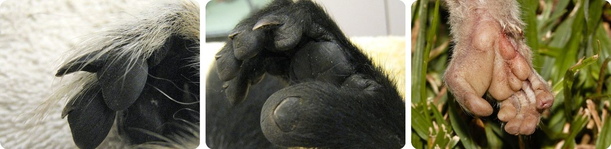
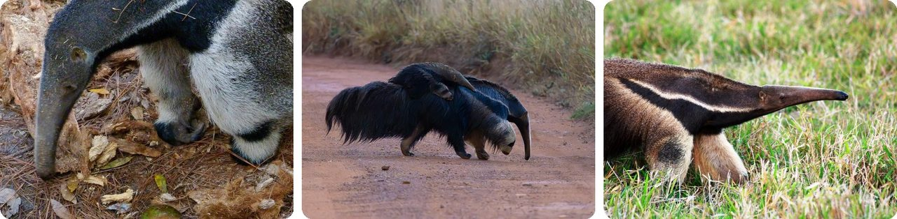

🌍 Top 10 Uñas de los pies, garras y pezuñas
19 de noviembre de 2026
1. 💅 Las uñas de tus pies crecen a la mitad de velocidad que las de tus manos
 Las uñas de las manos crecen unos 3.5 mm al mes, pero las de los pies crecen solo unos 1.6 mm, más o menos el grosor de una moneda. Una uña del pie completamente nueva tarda de 12 a 18 meses en crecer, y una de la mano solo de 3 a 6.
Las uñas de las manos crecen unos 3.5 mm al mes, pero las de los pies crecen solo unos 1.6 mm, más o menos el grosor de una moneda. Una uña del pie completamente nueva tarda de 12 a 18 meses en crecer, y una de la mano solo de 3 a 6.
Las uñas están hechas de queratina, el mismo material duro de las garras, las pezuñas y los cuernos. La única parte viva está escondida bajo la piel, en la base. La uña que ves son capas de células muertas bien apretadas, por eso cortarla no duele.
Y aquí va un mito desmentido: las uñas no siguen creciendo después de morir. La piel se seca y se encoge, y por eso las uñas se ven más largas.
Piénsalo como una pezuña en cada dedo del pie, solo que mucho más delgada.
2. 〰️ Una rayita en una uña del pie puede mostrar que estuviste enfermo hace meses
 A veces aparece un surco profundo que atraviesa la uña de lado a lado. Se llama línea de Beau, por el médico francés Joseph Beau, que la describió en 1846.
A veces aparece un surco profundo que atraviesa la uña de lado a lado. Se llama línea de Beau, por el médico francés Joseph Beau, que la describió en 1846.
Así se forma. Una fiebre fuerte, una enfermedad o un golpe hace que la zona donde nace la uña, debajo de la piel, se detenga un rato → esa parte de la uña sale más delgada → se forma una hendidura → la hendidura va subiendo poco a poco hacia la punta conforme crece la uña.
En niños con la enfermedad de Kawasaki, las líneas pueden aparecer de uno a dos meses después de que empieza la fiebre. Como una uña del pie tarda un año o más en crecer completa, la marca puede verse mucho tiempo.
Es como los anillos de un árbol, pero de las veces que te enfermaste.
3. 🐎 La pezuña de un caballo es una uña gigante
 Una pezuña es la punta de un dedo cubierta por una capa gruesa y dura de queratina, lo mismo que tus uñas. El caballo tiene una sola pezuña en cada pata, así que camina sobre cuatro dedos nada más.
Una pezuña es la punta de un dedo cubierta por una capa gruesa y dura de queratina, lo mismo que tus uñas. El caballo tiene una sola pezuña en cada pata, así que camina sobre cuatro dedos nada más.
Igual que tus uñas, las pezuñas nunca dejan de crecer. Los caballos salvajes las desgastan más o menos al mismo ritmo en que crecen, de tanto caminar en terreno áspero.
Los caballos que viven con personas muchas veces no caminan lo suficiente en suelo duro y áspero, o cargan peso en caminos. Por eso un herrador (un especialista en pezuñas) se las recorta y les clava herraduras para protegerlas.
O sea, una herradura es una funda de celular para una uña.
4. 🐈 Los gatos esconden sus garras para mantenerlas afiladas
 Casi todos los miembros de la familia de los gatos tienen garras que se meten dentro de la pata cuando no las usan. Guardadas, no rozan el suelo, así que siguen afiladas.
Casi todos los miembros de la familia de los gatos tienen garras que se meten dentro de la pata cuando no las usan. Guardadas, no rozan el suelo, así que siguen afiladas.
Las garras de los gatos además crecen en capas. Cada cierto tiempo, una capa vieja de afuera deja de crecer y se prepara para caerse → el gato rasca madera o un rascador → la capa vieja se desprende y abajo hay una nueva bien afilada.
Los gatos también tienen un espolón en la parte de arriba, por dentro de las patas delanteras. Nunca toca el suelo, así que se desgasta menos y suele estar más afilado y largo que las demás.
En otras palabras, el rascador es donde los gatos les sacan punta a sus lápices.
5. 🐸 La rana peluda se rompe los huesos de los dedos para sacar garras
 La rana peluda vive en África central, en países como Camerún. También le dicen rana del terror, y con razón.
La rana peluda vive en África central, en países como Camerún. También le dicen rana del terror, y con razón.
Cuando algo la agarra, la rana suelta la punta afilada de un hueso del dedo de la bolita que la sostiene → empuja esos huesos filosos a través de su propia piel → y ya tiene garras. Son de hueso, no de queratina, así que no son garras de verdad.
Los científicos creen que las garras vuelven a meterse después, mientras la piel rota sana. El "pelo" de los machos en temporada de reproducción tampoco es pelo. Son tiras delgadas de piel que podrían ayudarles a absorber oxígeno extra.
Imagínate convertir tus propios dedos en una navaja.
6. 🐒 Los lemures tienen una "garra de aseo" especial para rascarse

Los lemures, los gálagos y los loris tienen uñas planas en casi todos los dedos de los pies, como nosotros. Pero el segundo dedo de cada pie tiene una garra de aseo curva.La usan para peinarse el pelaje y rascarse, sobre todo alrededor de la cabeza y el cuello, los lugares difíciles de alcanzar.
Los tarseros tienen garras de aseo en dos dedos de cada pie, el segundo y el tercero. Sus pies son casi como manos: el dedo gordo puede agarrar como un pulgar.
Piénsalo como un peine integrado en un dedo.
7. 🪶 Algunas aves tienen un peine en el dedo de en medio
 Las aves se untan aceite en las plumas para mantenerlas en forma, pero no alcanzan su propia cabeza con el pico. Así que muchas usan una pata: pasan el aceite del pico a la pata y luego se lo rascan en las plumas de la cabeza.
Las aves se untan aceite en las plumas para mantenerlas en forma, pero no alcanzan su propia cabeza con el pico. Así que muchas usan una pata: pasan el aceite del pico a la pata y luego se lo rascan en las plumas de la cabeza.
Las garzas, los chotacabras, los búhos y las fragatas tienen una uña en el dedo de en medio con dientitos en un lado, como un peine. Se llama uña pectinada, y podría ayudarles a peinarse y aceitarse la cabeza.
Algunas aves se rascan pasando la pata por encima del ala bajada, y otras por debajo, y el método puede depender de cómo vive cada especie.
O sea, se peinan con las uñas de los pies.
8. 🐦 Los pollitos de hoazín tienen garras en las alas
 El hoazín es un ave rara de Sudamérica, con una cresta de picos, y es el ave nacional de Guyana. Sus pollitos nacen con dos garras en cada ala.
El hoazín es un ave rara de Sudamérica, con una cresta de picos, y es el ave nacional de Guyana. Sus pollitos nacen con dos garras en cada ala.
Las usan para trepar. Cuando ataca un halcón, los adultos arman alboroto para distraerlo → los pollitos se escabullen del nido → si los encuentran, se dejan caer al agua de abajo, nadan bajo la superficie y luego usan las garras de las alas y sus patotas para volver a subir.
Antes la gente lo comparaba con el Archaeopteryx, un ave antigua con garras en las alas. Pero ahora los científicos creen que las garras del hoazín son un truco más reciente para trepar antes de que los pollitos puedan volar.
En otras palabras, los bebés suben al árbol como por una escalera, usando los brazos.
9. 🐜 Los osos hormigueros gigantes caminan sobre los nudillos para cuidar sus garras

El oso hormiguero gigante de Centro y Sudamérica tiene garras enormes en las patas delanteras, y la del medio es la más grande. Las usa para abrir nidos de hormigas y termitas, y luego se come los bichos con una lengua larga y pegajosa.Para que esas garras no se desgasten, camina sobre los nudillos de las patas delanteras, un poco como un gorila o un chimpancé. Las garras van dobladas y sin tocar el suelo.
Las patas traseras son diferentes: sus garras son cortas, y ahí camina con la planta bien apoyada.
Es como caminar con los puños para no maltratar tus herramientas.
10. 🦖 Un dinosaurio tuvo las garras más largas de cualquier animal terrestre
 El Therizinosaurus ("lagarto guadaña") vivió en lo que hoy es Mongolia, hace unos 69 a 66 millones de años. Era herbívoro, medía hasta 10 m (33 pies) de largo, y los huesos de las garras de sus manos medían más de 50 cm (20 pulgadas), más que el antebrazo y la mano de un adulto juntos.
El Therizinosaurus ("lagarto guadaña") vivió en lo que hoy es Mongolia, hace unos 69 a 66 millones de años. Era herbívoro, medía hasta 10 m (33 pies) de largo, y los huesos de las garras de sus manos medían más de 50 cm (20 pulgadas), más que el antebrazo y la mano de un adulto juntos.
Cuando encontraron las primeras garras en el desierto de Gobi en 1948, el científico que le puso nombre pensó que eran de un reptil gigante parecido a una tortuga que las usaba para cosechar algas.
Ahora los expertos creen que usaba las garras sobre todo para jalar ramas hacia su boca, aunque sus brazos fuertes también le podían servir para defenderse.
Imagínate unas tijeras de jardín tan largas como tu brazo.
Dato curioso
El casuario, un ave enorme que no vuela, de Australia y Nueva Guinea, tiene en el dedo interior de cada pata una garra como daga que puede medir 12.5 cm (5 pulgadas). Patea con piernas muy fuertes, por eso muchas veces le dicen "el ave más peligrosa del mundo", y a los soldados en Nueva Guinea durante la Segunda Guerra Mundial les advertían que no se le acercaran. Aun así, los registros muestran que el avestruz lastima a más gente: mata a dos o tres personas al año en Sudáfrica. Y eso hace pensar qué animales son de verdad los más peligrosos, y cuáles solo tienen mala fama.
Créditos de las fotos (Wikimedia Commons)
- #1: I painted my toenails <3 (flickr) by *~Much to My Dismay~*, CC BY 2.0
- #1: Purple Toenails - May 2011 - Well I Never (flickr) by Gareth1953 All Right Now, CC BY 2.0
- #1: Toes.jpg by unknown, Attribution
- #2: Big-toe-nail.jpg by 些細な日常, CC BY-SA 4.0
- #2: Beau's lines.JPG by LynnMcCleary, CC BY-SA 4.0
- #2: Beau's line on left, middle fingernail.jpg by Elipongo, Public domain
- #3: Hoof bottom view.jpg by Alex brollo, CC BY-SA 4.0
- #3: Equine hoof hc biovision.jpg by Dr. Christoph von Horst, CC BY-SA 3.0
- #3: Farrier Winthrop Washington.jpg by Guywelch2000, CC0
- #4: Cat paws and claws 1 2015-01-16.JPG by FASTILY, CC BY-SA 4.0
- #4: Black cat in repose.jpg by SMPL Reference, CC BY-SA 3.0
- #4: Cat yawn with exposed teeth and claws.jpg by DecafPotato, CC BY-SA 4.0
- #5: Astylosternus robustus · Mayoko, CG-NI, CG by no rights reserved, CC0
- #5: Hairy frog (Trichobatrachus robustus) 1.jpg by Melvin TOULLEC, CC BY-SA 4.0
- #5: Trichobatrachus robustus.JPG by Gustavocarra, CC BY-SA 4.0
- #6: Lemur catta toilet claw.jpg by Alex Dunkel (Maky), CC BY 3.0
- #6: Varecia variegata foot with toilet-claw.jpg by Maky (Alex Dunkel), CC BY 3.0
- #6: Galago moholi 276577285.jpg by i_c_riddell, CC BY 4.0
- #7: Ardea cinerea Putzkralle.jpg by Donkey shot (Christof Bobzin), CC BY 3.0
- #7: Barn Owl Pectinate Claw.jpg by Daniel Polin, CC BY-SA 4.0
- #7: Night Heron pectinate toe by Vedant Kasambe.jpg by Vedant Raju Kasambe, CC BY 4.0
- #8: Hoatzin chick.jpg by J. Arthur Thomson., Public domain
- #8: Opisthocomus hoazin · Careiro - Amazonas, Brasilien by no rights reserved, CC0
- #8: Hoatzin (flickr) by A.Davey, CC BY 2.0
- #9: Giant Anteaters - Brevard Zoo - Flickr - Rusty Clark (5).jpg by Rusty Clark from merritt usland FLA, CC BY 2.0
- #9: Myrmecophaga tridactyla · Minas Gerais, BR by no rights reserved, CC0
- #9: IMG_6346/Brazil/Mato Grosso Do Sul/Pantanal/Giant Antéater/Grand Fourmilier/Tamanoir (flickr) by dany13, CC BY 2.0
- #10: Therizinosaurus claw.jpg by Woudloper, CC BY-SA 3.0
- #10: Therizinosaurus claws lateral.jpg by Frank Black Noir, CC BY 2.0
- #10: Therizinosaurus TD.png by TotalDino, CC BY 4.0


_1.jpg){kind=link}


.jpg){kind=link}